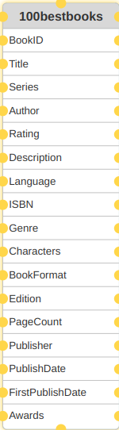
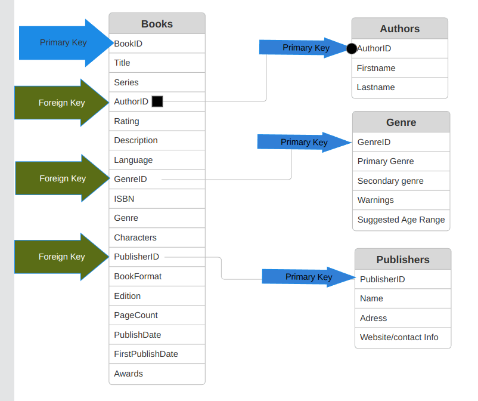

PDF Version Available
This document is also available in PDF format: dbvocab.pdf
The PDF version includes bookmarks for easy navigation and is optimized for printing.
Accessibility Notice
This document is also available in HTML format at:
Link: https://aholdengouveia.name/IntroData/labs/dbvocab.html
The HTML version provides enhanced accessibility features including keyboard navigation, screen reader support, responsive design, dark mode support, and high contrast options.
Objectives:
- The objective of this lab is to introduce students to the fundamental concepts of database keys, vocabulary, and normalization without involving programming or mathematical operations. Students will gain a basic understanding of these concepts through hands-on exploration and practical examples.
References, a video, a PowerPoint and some notes are available at my website Link: https://www.aholdengouveia.name/IntroData/databasekeysandvocab.html
Complete the following
Using the data you have collected and started working with
If you need to switch away from your original data for any reason, please check in with me before you do so.
My examples will be based on the book data I collected previously, 100bestbooks.csv if you have trouble adding your data, make sure to check how many characters are allowed in each field, it's likely the default will be a text[varchar] and only allow 100 characters, but you can change that to whatever you need.
- Create a table that has the labels for all your data. You can create this graphic using any program you want. Here is an example of what this should look like based on my book data:

This is an image of my single table from the original CSV. - Identify some potential ways you could separate out your data in into other tables, and list at least 3 options including an explanation of why you think those might be good choices. For example with my books data you could have a table for authors, genres, Book format, publishers, or awards.
- Identify potential keys for the different tables, for example with my sample data about books I could use things such as "Book ID" for the Books table and "Author ID" for the Authors table. Submit a list of possible keys for your different tables along with some pros and cons for each option.
- Determine which key(s) should be designated as primary keys and foreign keys based on their uniqueness and relationship with other tables. Make sure to explain why you've chosen what you have, but keep in mind the rules for primary key and foreign key.
- Create an Entity Relationship Diagram (ERD) for your database keeping in mind all of the the above constraints. You need to have at least 3 tables, an identified and labeled Primary key for each table, and each table must have a foreign key labeled as well with the relationship noted.You may use free online ERD makers or something else. It's more important to have the relationships modeled clearly and labeled well then it is to use the standard shapes and lines. An example of what this would look like for my books data is here:

This is an image of my 3 tables after choosing how I want to start normalizing my data and planning my database.
Deliverables
- A text document that contains the answers to all the above questions
- Your data in saved as a database, not a spreadsheet.
- Image of your original labeled table from question 1
- Image of your Entity Relationship Diagram (ERD) from question 5